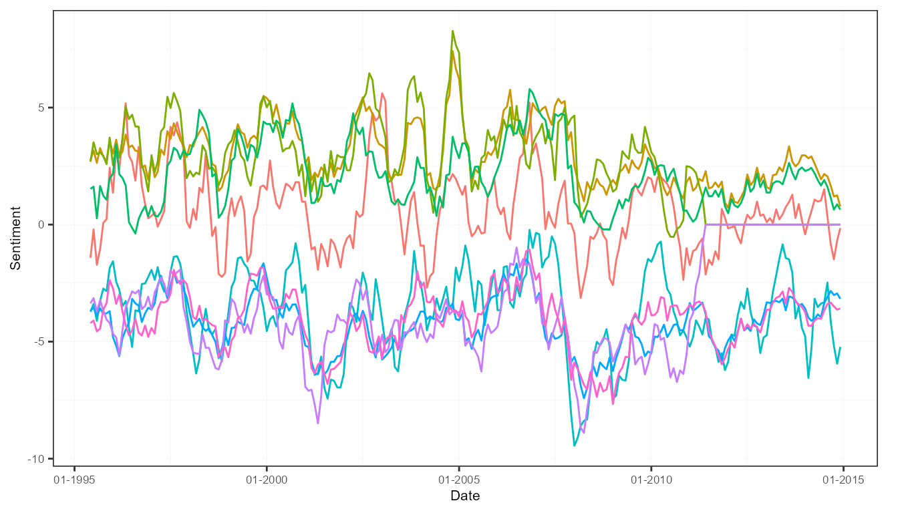
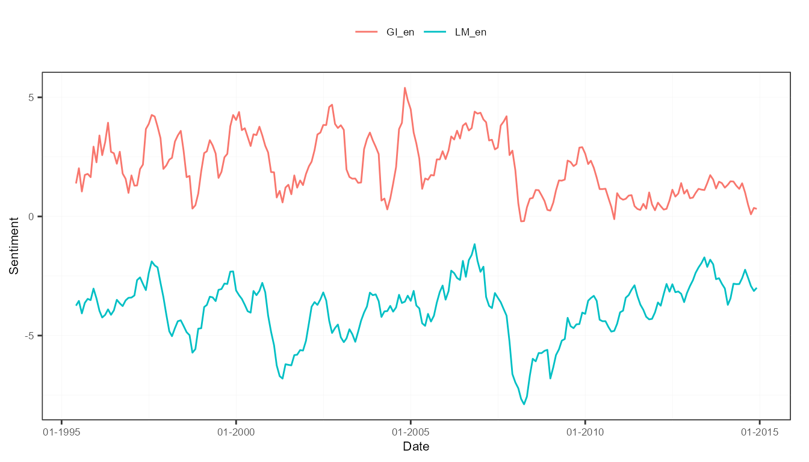
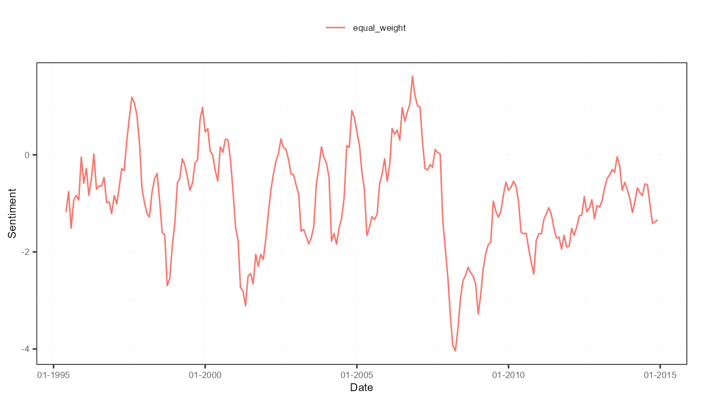

This tutorial provides a guide on how to flexibly aggregate a qualitative corpus into many time series indices.
Preparation
library("sentometrics") library("ggplot2") library("data.table") data("usnews") data("list_lexicons") data("list_valence_shifters")
To aggregate document-level sentiment scores into time series requires only to specify a few parameters regarding the weighting and the time frequency.
corpus <- sento_corpus(usnews) s <- compute_sentiment( corpus, sento_lexicons(list_lexicons[c("GI_en", "LM_en")]), how = "counts" ) ctr <- ctr_agg(howDocs = "proportional", howTime = "equal_weight", by = "month", lag = 6) measures <- aggregate(s, ctr)
The obtained measures can be plotted, all of them, or according to the three time series dimensions (the corpus features, the lexicons and the time weighting schemes).
plot(measures)

plot(measures, "features")
plot(measures, "lexicons")

plot(measures, "time")

The aggregation into sentiment time series does not have to be done in two steps. Below one-step approach is recommended because very easy!
corpus <- sento_corpus(usnews) lexicons <- sento_lexicons(list_lexicons[c("GI_en", "LM_en", "HENRY_en")]) ctr <- ctr_agg(howWithin = "counts", howDocs = "proportional", howTime = "linear", by = "week", lag = 14) measures <- sento_measures(corpus, lexicons, ctr) measures
## A sento_measures object (12 textual sentiment time series, 1031 observations).Similar to extracting the peak documents in a sentiment table, we extract here the peak dates in the sentiment time series matrix. Detected below are the 5 dates where average sentiment across all sentiment measures is lowest.
peakDatesNeg <- peakdates(measures, n = 5, type = "neg", do.average = TRUE)
dtPeaks <- as.data.table(subset(measures, date %in% peakDatesNeg)) data.table(dtPeaks[, "date"], avg = rowMeans(dtPeaks[, -1]))
## date avg
## 1: 2008-01-28 -1.987907
## 2: 2008-02-18 -1.886904
## 3: 2008-03-17 -2.113898
## 4: 2008-03-24 -1.911718
## 5: 2008-04-07 -1.904891Sentiment measures can be further aggregated across any of the three dimensions. The computed time series are averages across the relevant measures.
corpus <- sento_corpus(usnews) lexicons <- sento_lexicons(list_lexicons[c("GI_en", "LM_en", "HENRY_en")]) ctr <- ctr_agg(howWithin = "counts", howDocs = "proportional", howTime = c("linear", "equal_weight"), by = "week", lag = 14) measures <- sento_measures(corpus, lexicons, ctr) measuresAgg <- aggregate(measures, features = list("journal" = c("wsj", "wapo")), time = list("linequal" = c("linear", "equal_weight"))) get_dimensions(measuresAgg) # inspect the components of the three dimensions
## $features
## [1] "economy" "noneconomy" "journal"
##
## $lexicons
## [1] "GI_en" "LM_en" "HENRY_en"
##
## $time
## [1] "linequal"With the subset() function, a sento_measures object can be subsetted based on a condition, and time series with certain dimension components can be selected or deleted.
To keep it at its simplest, all the sentiment measures computed can be condensed in a few global sentiment time series. The computation can be run in a weighted way as well.
corpus <- sento_corpus(usnews) lexicons <- sento_lexicons(list_lexicons[c("GI_en", "LM_en", "HENRY_en")]) ctr <- ctr_agg(howWithin = "counts", howDocs = "proportional", howTime = c("linear", "equal_weight"), by = "week", lag = 14) measures <- sento_measures(corpus, lexicons, ctr) measuresGlobal <- aggregate(measures, do.global = TRUE) measuresGlobal
## date globLex globFeat globTime global
## 1: 1995-04-03 0.17818262 0.13363697 0.26727393 0.19303117
## 2: 1995-04-10 0.13992740 0.10494555 0.20989110 0.15158801
## 3: 1995-04-17 0.14764067 0.11073051 0.22146101 0.15994406
## 4: 1995-04-24 0.09640571 0.07230429 0.14460857 0.10443952
## 5: 1995-05-01 -0.01741176 -0.01305882 -0.02611764 -0.01886274
## ---
## 1027: 2014-12-01 -0.25656578 -0.19242434 -0.38484867 -0.27794626
## 1028: 2014-12-08 -0.27462318 -0.20596738 -0.41193476 -0.29750844
## 1029: 2014-12-15 -0.34148426 -0.25611320 -0.51222639 -0.36994128
## 1030: 2014-12-22 -0.22851388 -0.17138541 -0.34277083 -0.24755671
## 1031: 2014-12-29 -0.21775030 -0.16331273 -0.32662546 -0.23589616The output in this case is not a specific sentometrics sento_measures object, but a data.table object. Below produces a nice plot using the ggplot2 package.
ggplot(melt(measuresGlobal, id.vars = "date")) + aes(x = date, y = value, color = variable) + geom_line() + scale_x_date(name = "Date", date_labels = "%m-%Y") + scale_y_continuous(name = "Sentiment") + theme_bw() + sentometrics:::plot_theme(legendPos = "top") # a trick to make the plot look nicer